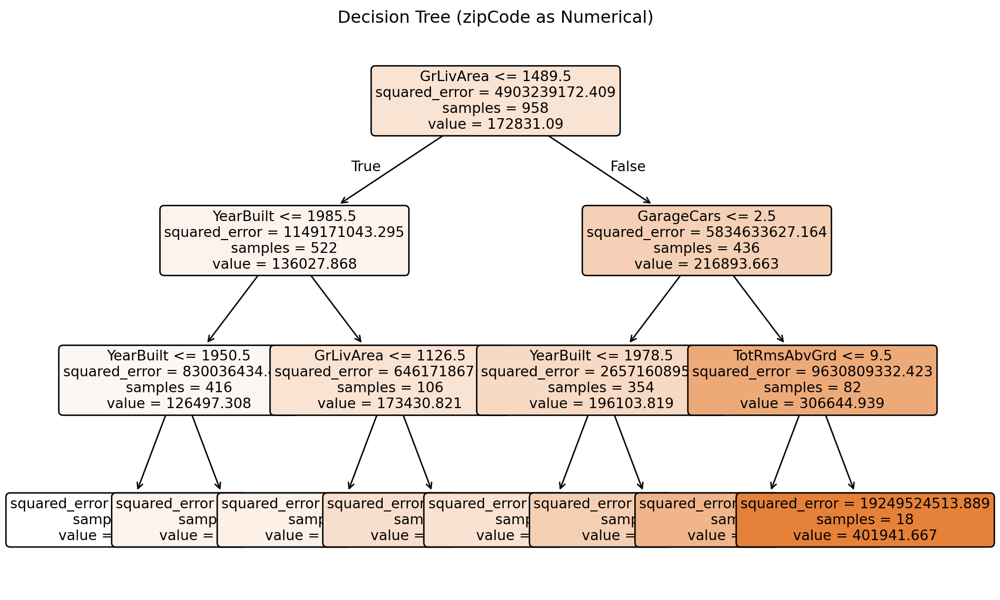
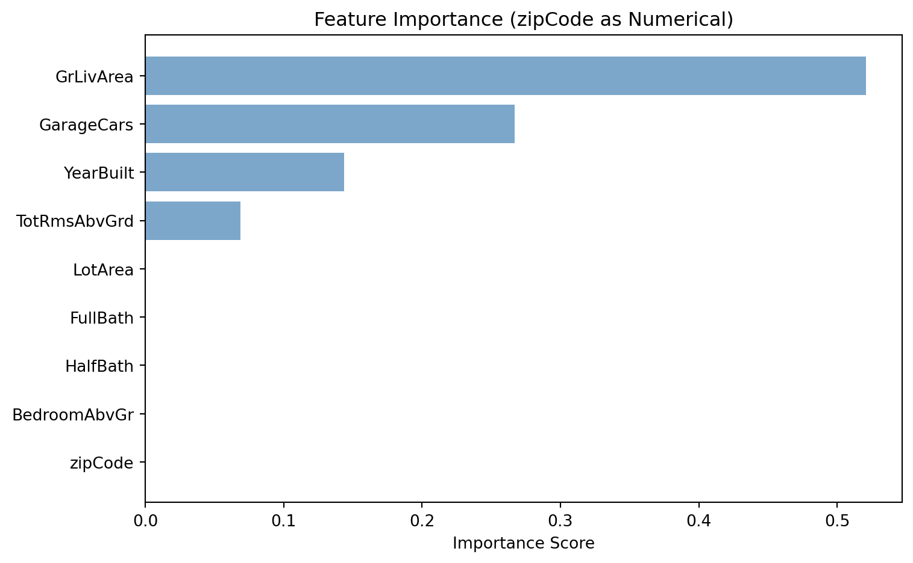
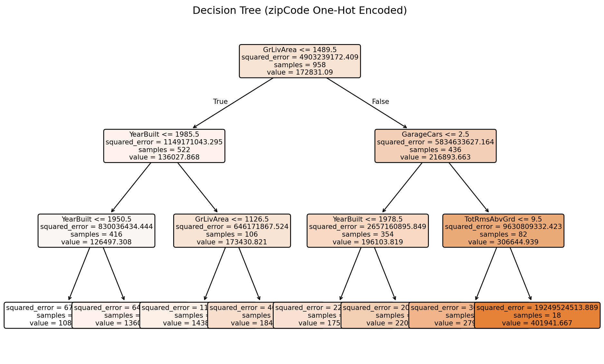
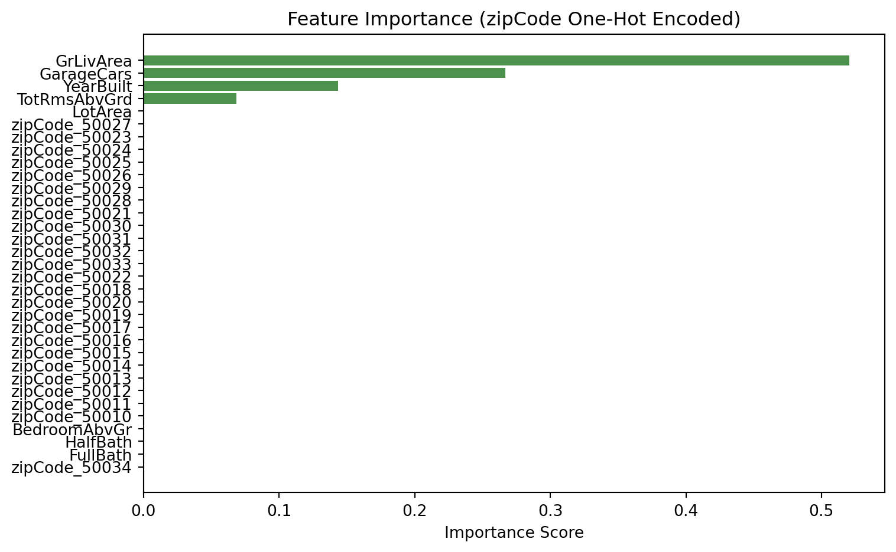

Model built with 8 terminal nodesDecision Tree Challenge
Feature Importance and Categorical Variable Encoding
🌳 Decision Tree Challenge - Feature Importance and Variable Encoding
Tree Visualization
Python

:::
Feature Importance Analysis
Python

Critical Analysis: The Encoding Problem
WarningTree Visualization: Categorical zipCode
Python

Feature Importance: Categorical zipCode
Python

Discussion Questions for Challenge
- Numerical vs Categorical Encoding: There are two modelsin Python written above. For each language, the models differ by how zip code is modelled, either as a numerical variable or as a categorical variable. Given what you know about zip codes and real estate prices, how should zip code be modelled, numerically or categorically? Is zipcode and ordinal or non-ordinal variable?
Zip code should be modelled as a categorical variable. Although it is written in a numerical format, you should not treat it as something that you can subtract from, find the mean of, etc. Each Zip Code ultimately represents a location and should be treated as a categorical variable. A zip code would fall under the category of being a non-ordinal variable.
- R vs Python Implementation Differences: When modelling zip code as a categorical variable, the output tree and feature importance would differ quite significantly had you used R as opposed to Python. Investigate why this is the case. What does R offer that Python does not? Which language would you say does a better job of modelling zip code as a categorical variable? Can you quote the documentation at https://scikit-learn.org/stable/modules/tree.html suggesting a weakness in the Python implementation? If so, please provide a quote from the documentation.
When you model zip code as a categorical variable, R and Python behave very differently, and it in fact ends up affecting the entire structure of the tree. This is particularly easier for R because it is a programming language that has known factors for categorical models, unlike Python that many a times relies on the programmer creatively categorizing what is a categorical variable. Python’s Decision Trees, on the other hand, do not support categorical variables. Instead, the zip codes need to be encoded, after which the tree begins to split on the encoded variable, as opposed to splitting on the categorical variable that is the zip code itself. This is because, as stated by scikit-learn itself, “the scikit-learn implementation does not support categorical variables for now.” In this particular situation, R is far more effective because it uses the zip codes in a manner they are meant to be used, unlike Python, which might require a workaround that, in effect, affects how the values are recognized.
- Are There Any Suggestions for Implementing Decision Trees in Python With Prioper Categorical Handling? Please poke around the Internet (AI is not as helpful with new libraries) for suggestions on how to implement decision trees in Python with better (i.e. not one-hot encoding) categorical handling. Please provide a link to the source and a quote from the source. There is not right answer here, but please provide a thoughtful answer, I am curious to see what you find.
If you want to stick with Python yet still have your decision tree treat categorical variables correctly, you typically need to look beyond the basic scikit-learn implementation. Libraries like CatBoost, LightGBM, and H2O contain implementations that can handle categorical variables without one-hot encoding. As an example, CatBoost explicitly claims it can “convert categorical values into numbers using various statistics,” which is really just a more intelligent way of incorporating categorical information without forcing artificial numeric orderings or exploding the feature space. This is particularly important for variables like zip code, in which the category itself carries meaning related to geography and market behavior rather than numeric magnitude. So while Python’s default decision tree does not handle categorical variables that well, there are clearly some good alternatives within the Python ecosystem. You simply need to choose models that actually know what a categorical variable is meant to represent instead of jamming it into a numerical structure that can distort underlying relationships within the data.